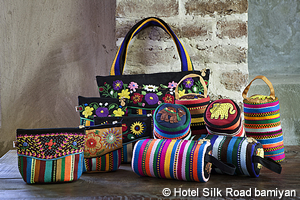
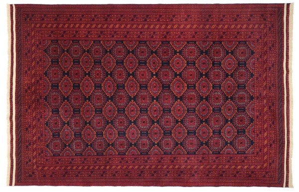
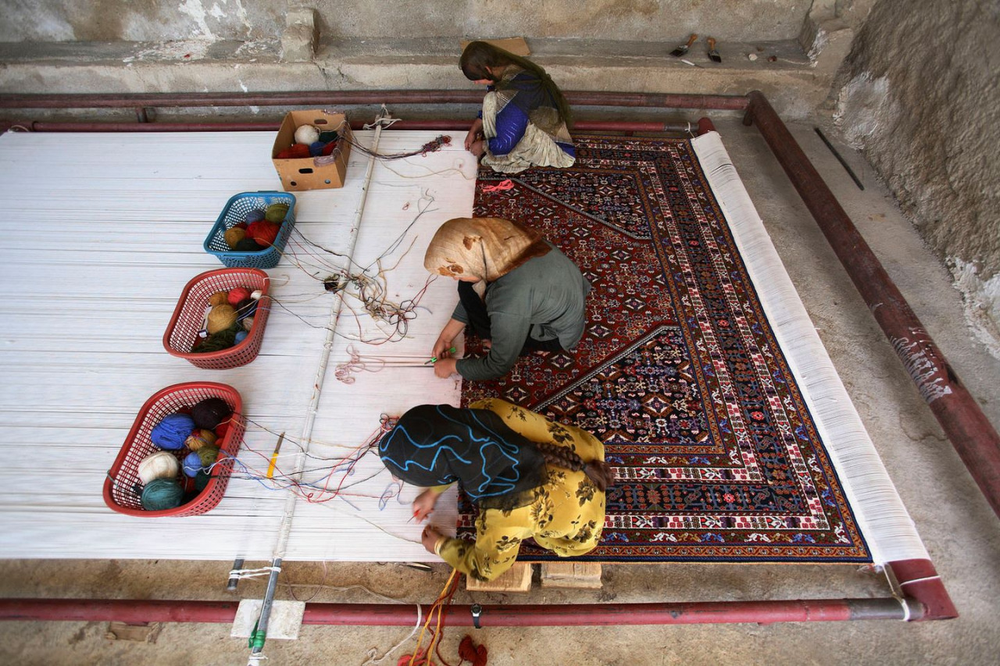

Bamiyan's hand woven cloth is woven by women in the village called "the Dragon Valley"located
just outside of Bamiyan city. There are hundreds, thousands of colorful design and individuality of
the Weaver reflects on each design. You can find your favorite design from our various kind of
products.

Istalifi Pottery famed for its distinctive
turquoise colour is one of the countries most recognizable crafts and dates back up to four hundred
years. Originating from a small village of Istalif (about two hours drive from Kabul) this craft is
beginning to thrive again.

Hand-knotted Afghan rugs originally come
from Afghanistan and are characterized by their red color nuances and geometric patterns. They
integrate perfectly into any style of living and, thanks to their warm red tones, create a warm and
cozy atmosphere with a touch of the Orient.

Carpet weaving is not just an art, but
reflection of a country’s culture, tradition, and civilization. Carpets in Afghanistan are mainly
knitted by hand by tribal people especially women; and this tradition goes on from generations.
Carpet weaving is one of the most ancient crafts in Afghanistan.
Paragraph About Afghanistan Carpet and Rugs:
Carpets of Afghanistan is without a doubt one of the most detailed analysis of Afghanistan
rug production ever published. Author Richard Parsons, for many years a buyer in Afghanistan for the
well-known firm O.C.M (London) Ltd, treats the reader not only to a veritable feast of carpets and
rugs, all with their attendant tribal origins and motifs vividly explained, but also to a
fascinating journey through the history of a diverse and colorful country. The author shares his
respect and admiration for Afghanistan's stoic people, who, somehow, despite political upheavals,
forced resettlement, a harsh climate and often primitive nomadic conditions, manage to fashion
exquisite works of art which reflect their pride in their many-faceted heritage. Afghan rugs, which
are instantly appealing due to their traditional colors and bold designs, open up a whole vista for
the collector, from sumptuous piled purdahs to flat woven prayer rugs, all of them well illustrated
in the 154 color and 90 black and white plates.
Paragraph About men 's traditional dress in Afghanistan:
The perahan tunban is the standard traditional uniform dress for men, consisting of a
tunic shirt, pants, and with (optional) head covering. This dress originates from the Pashtun
lands but its use spread to most of Afghanistan. It remains the predominant dress for male
villagers. Some of the more famous varieties are the Kandahari Doozi and Herati Doozi styles. On
the head is normally a turban (lungi): they are worn all over the country, but the fabric, color
and style varies region by region. For example, an Uzbek hat from the north of the country is
distinct from a Pashtun hat worn in the south.
From a young age, boys often wear colorful caps with shiny "chips" of mirrors sewn into them.
The karakul hat is made of sheep fur and is of typical Central Asian style. Normally worn by the
more stylish or educated, these hats come in conservative colors. The chapan coat is another
cloth of Central Asian origin that provides warmth in the winter, made of striped silk. The
chapan gained international recognition in the 2000s when Afghan president Hamid Karzai always wore
a green one.
Paragraph About women 's traditional dress in Afghanistan
Traditional women's dresses are always long and are made from light linens and are
loose fitting for ease of movement. They come in many colors and have stitching for details. Most
traditional clothing are colorful, except for the Nuristan dress.[1] More elaborate and fancier
dresses are detailed with gold threading (Zardozi), gold beads, and come in many different colors on
silk fabrics. These dresses are usually worn to special occasions and weddings.
They are usually of heavy design and filled with small mirrors around the chest area, along with
long and pleated skirts.
Most Afghans are Muslim and virtually all Afghan women wear a head covering based on the local
interpretation of religious laws. Most women wear a hijab or chador as a covering. Some wear a
chadari, better known in the West as burqa.
In a few places like Kabul, Western dresses like jeans are often worn. From the 1960s to 1990s, more
liberal forms of female dress like miniskirts were popular among some communities in Kabul.
Information abount Afghanistan society:
Afghanistan is a landlocked south-central Asian country bordering Iran, Pakistan,
Turkmenistan, Uzbekistan and Tajikistan. It is a multi-ethnic society, containing diverse ethnic,
linguistic and tribal groups.
The government is an Islamic Republic and Islamic values, concepts and practices inform many social
and behavioral norms throughout society. Afghans generally have a strong sense of personal honor.
Hospitality, loyalty and modesty are highly valued. However, Afghan culture and daily life have been
significantly impacted by constant conflict. Resilience is now an essential trait that has become
instilled within the Afghan character as a result of these experiences.
While Afghanistan does have its own troubles, it's also an incredibly beautiful country that is full
of amazing people.